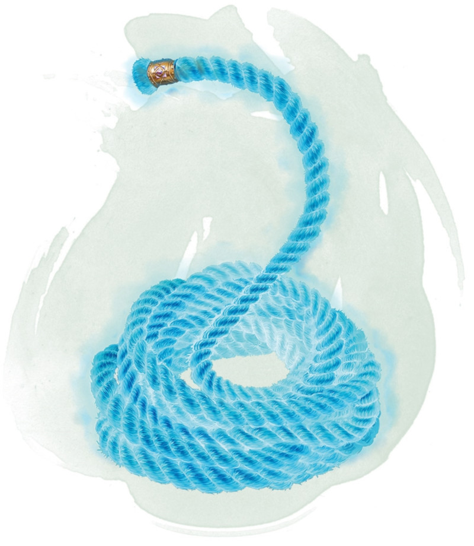

Rope of Entanglement
Wondrous item, rare
This rope is 30 feet long and weighs 3 pounds. If you hold one end of the rope and use an action to speak its command word, the other end darts forward to entangle a creature you can see within 20 feet of you, The target must succeed on a DC 15 Dexterity saving throw or become restrained.
You can release the creature by using a bonus action to speak a second command word. A target restrained by the rope can use an action to make a DC 15 Strength or Dexterity check (target's choice). On a success, the creature is no longer restrained by the rope.
The rope has AC 20 and 20 hit points. It regains 1 hit point every 5 minutes as long as it has at least 1 hit point. If the rope drops to 0 hit points, it is destroyed.
You can release the creature by using a bonus action to speak a second command word. A target restrained by the rope can use an action to make a DC 15 Strength or Dexterity check (target's choice). On a success, the creature is no longer restrained by the rope.
The rope has AC 20 and 20 hit points. It regains 1 hit point every 5 minutes as long as it has at least 1 hit point. If the rope drops to 0 hit points, it is destroyed.
Dungeon Master´s Guide (SRD)
